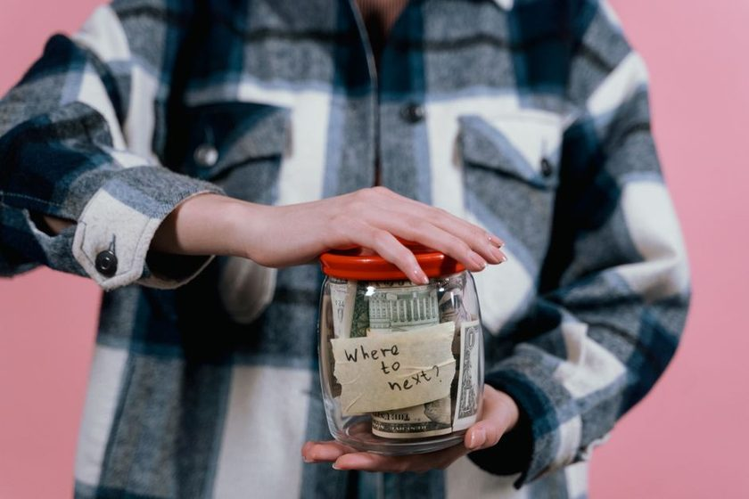

Reserva de emergência: quanto guardar antes de pensar em investir
A faixa entre 3 e 12 meses de despesas não é igual para todo perfil de renda. Como calcular a sua sem paralisar o orçamento.

Toda conversa sobre investir esbarra, mais cedo ou mais tarde, numa pergunta que costuma ser respondida de forma genérica: quanto eu preciso ter guardado antes de arriscar qualquer coisa? A resposta padrão — "de 3 a 12 meses de despesas" — está correta, mas é grande demais pra ser útil sozinha. Pra quem vive de salário fixo, 3 meses pode ser confortável. Pra quem fatura por projeto ou por comissão, mesmo 12 meses pode não cobrir um trimestre ruim. O problema não é a regra: é aplicá-la sem ajustar pro seu próprio risco de renda.
Este artigo detalha como estimar o número certo pra você, sem cair em dois erros comuns: guardar de menos e ficar exposto no primeiro imprevisto, ou guardar de mais e travar o orçamento tentando atingir uma meta inflada que não condiz com sua realidade.
O primeiro passo não é a meta — é a base de cálculo
Antes de decidir "quantos meses", é preciso decidir "meses de quê". A reserva de emergência cobre despesas essenciais, não o seu padrão de vida inteiro. Isso muda bastante o número final.
- Entra na conta: moradia (aluguel/financiamento + condomínio), contas de consumo (água, luz, internet, celular), alimentação básica, transporte pro trabalho, remédios de uso contínuo, plano de saúde e parcelas de dívida já assumidas.
- Fica de fora, em geral: streaming, lazer, roupas novas, viagens, jantar fora. Numa emergência de verdade, esses itens costumam ser os primeiros a serem cortados — então não faz sentido reservar dinheiro pra mantê-los.
Somar essas contas por 1 mês e chamar de "despesa essencial mensal" é o número que multiplica pela quantidade de meses da sua meta. Ignorar essa separação é o motivo pelo qual boa parte das pessoas acha a meta de reserva "impossível" — na prática, estavam calculando em cima do custo de vida completo, não do essencial.
Reserva de emergência não é poupança de sonho. É o dinheiro que existe pra você não precisar recorrer a cartão de crédito rotativo, cheque especial ou empréstimo consignado quando o imprevisto acontece — e o custo desse crédito emergencial costuma ser desproporcional ao problema original, como mostramos em como a Selic entra na conta do parcelamento e do cheque especial.
Quantos meses guardar — e por que o número muda por perfil de renda
A variação de 3 a 12 meses existe porque o risco de interrupção de renda não é igual pra todo mundo. Uma forma simples de pensar isso:
CLT com estabilidade razoável
Quem tem carteira assinada, setor estável e pouca chance de demissão em massa costuma trabalhar bem com uma meta entre 3 e 6 meses de despesas essenciais. O acesso a FGTS e seguro-desemprego (quando aplicável) também reduz um pouco a pressão, já que funcionam como uma camada extra de proteção — não substituem a reserva, mas encurtam o tempo em que ela precisa segurar a barra sozinha.
Autônomo, PJ ou renda variável
Quem fatura por contrato, comissão ou projeto tem renda mais instável mês a mês, mesmo que a média anual seja boa. Nesse perfil, a meta sobe pra faixa de 9 a 12 meses, porque não existe seguro-desemprego, e um cliente grande que atrasa ou cancela pode derrubar o caixa de um trimestre inteiro sem aviso.
Renda mista ou setor cíclico
Comissionados de vendas em setores sazonais, freelancers com poucos clientes fixos ou quem tem uma parte da renda em CLT e outra variável costuma ficar no meio do caminho: algo entre 6 e 9 meses, ajustando pra baixo se a parte fixa da renda já cobrir a maior parte das despesas essenciais.
| Perfil | Meses de despesas essenciais | Por quê |
|---|---|---|
| CLT, setor estável | 3 a 6 | Renda previsível + FGTS/seguro-desemprego como colchão extra |
| Renda mista / comissionado | 6 a 9 | Parte da renda oscila mês a mês |
| Autônomo / PJ / freelancer | 9 a 12 | Sem rede de proteção formal, renda depende de poucos clientes |
Esses números são pontos de partida, não fórmulas fechadas. Quem tem dependentes, dívida ativa ou mora em imóvel financiado (risco de perder o bem em atraso prolongado) tende a puxar a própria meta pra cima da faixa do seu perfil.
Onde guardar: liquidez primeiro, rendimento depois
O erro mais caro na hora de guardar a reserva é escolher o produto pelo rendimento e esquecer da liquidez. Reserva de emergência precisa estar disponível quando a emergência acontece — não em 30, 60 ou 90 dias.
| Onde guardar | Liquidez | Rendimento aproximado | Indicado para |
|---|---|---|---|
| Poupança | Imediata | Baixo, abaixo do CDI | Quem prioriza simplicidade acima de tudo |
| Tesouro Selic | D+1 (próximo dia útil) | Próximo de 100% do CDI | Reserva principal, valor médio a alto |
| CDB liquidez diária (banco sólido) | Imediata a D+1 | 100% do CDI ou perto disso | Quem já tem conta em banco/corretora com CDB de liquidez diária |
Na prática, muita gente divide a reserva em duas camadas: uma fatia pequena (o equivalente a 1 mês) na conta corrente ou poupança pra acesso imediato, e o restante em Tesouro Selic ou CDB de liquidez diária, que rende mais e ainda assim libera o dinheiro em menos de 2 dias úteis. Se depois disso você quiser entender as opções de baixo risco pra além da reserva, o comparativo entre Tesouro Direto ou CDB para os primeiros R$ 1.000 é o próximo passo natural.
Como montar a reserva sem sacrificar o orçamento mensal
Tentar juntar 6 meses de despesas de uma vez é o motivo pelo qual muita gente desiste no meio do caminho. O caminho mais sustentável é fatiar a meta:
- Comece pela primeira parcela pequena. A primeira meta real não é "6 meses" — é o equivalente a 1 mês de despesas essenciais. Esse valor já cobre boa parte dos imprevistos do dia a dia (conserto de carro, consulta médica, conta atrasada).
- Automatize um valor fixo todo mês. Um valor pequeno e automático (mesmo que seja modesto) supera, ao longo do ano, uma "sobra" que depende de disciplina manual. Separar o valor no dia em que o salário cai evita que ele se dissolva no restante do orçamento.
- Reveja o orçamento essencial antes de aumentar a meta. Se as despesas essenciais couberem em um método claro de divisão de renda, sobra mais previsibilidade pra destinar à reserva — o método 50-30-20 adaptado ao seu salário ajuda a enxergar quanto dá pra reservar sem pressão.
- Suba a meta em etapas. De 1 mês, vá pra 3, depois 6, depois a meta final do seu perfil. Cada etapa concluída já reduz uma fatia real de risco — não é preciso esperar chegar ao número ideal pra já estar mais protegido do que estava antes.
Um ponto que passa despercebido: acompanhar as datas de vencimento das próprias contas essenciais ajuda a não recorrer à reserva por desorganização, e não por emergência de verdade. Um boleto esquecido que vira juros e multa é, no fim das contas, dinheiro saindo da reserva por falta de aviso — o tipo de vazamento que um calendário de vencimentos, como o oferecido pelo app Vencerto, existe justamente para evitar.
Quando a reserva está pronta, o que muda
Atingir a meta da reserva não é o fim do planejamento — é o que libera a próxima etapa com menos ansiedade. Com a reserva formada, decisões como trocar de emprego, negociar uma dívida à vista com desconto, ou começar a investir em produtos de prazo mais longo deixam de depender de "e se der errado no meio do caminho". A reserva é o que permite errar sem que o erro vire crise.
Vale reforçar: a reserva de emergência não compete com investimento de longo prazo, ela é o que vem antes. Só depois de ter esse colchão formado — e não antes — costuma fazer sentido migrar parte do orçamento pra objetivos de prazo mais longo, exposição a renda variável ou aportes recorrentes fora da liquidez diária.